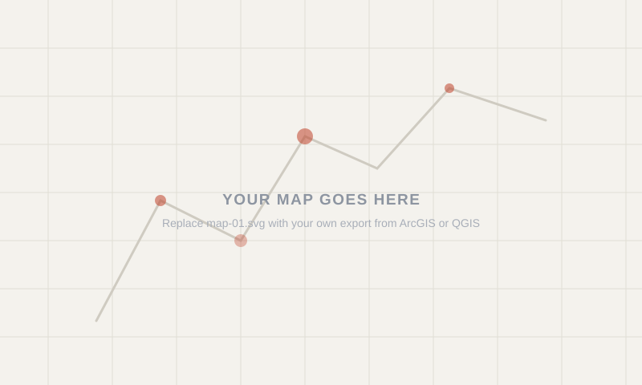

Lab 03 · October 2026
Land Burned in the 2016 Soberanes Fire
The question
How much land was burned in the 2016 Soberanes Fire?
The data
The first dataset is a layer in ArcGIS Online called "Soberanes_Perimeter". It archived the burned area in the 2016 Soberanes Fire and was published in 2017 as a public teaching layer by Esri. It's important to note that the coordinate system of this layer is WGS 84 / Pseudo-Mercator (ESPG:3857) and it is only stated in the layer's service definition instead of the Mapviewer. Also, the burned area is actually consisted of one big polygon and a great number of small polygons. There are 690 polygons in total when the layer is displayed in WGS 84 and 686 polygons are smaller than the cell area (900 m²) that a single pixel of the Landsat satellite's sensor corresponds to. The second dataset I use is the satellite imagery of the wildfire area captured by the Landsat 8 satellite. The two images I used were captured on June,20 2016 and Oct,26 2016, both rendered in Short-wave infrared (SWIR). The third dataset, which is the terrain data, comes from the layer named "Terrain3D" published by Esri. Heights in this layer are orthometric (in meters) and are based on multiple sources.
The method
I measured the Soberanes Fire perimeter in three frames. First, I used the Arcade expression below to calculate the polygon's planar area in the source coordinate system (EPSG:3857, Web Mercator) and its geodetic area on the WGS 84 ellipsoid:
var planar = Area($feature, 'square-kilometers');
var globe = AreaGeodetic($feature, 'square-kilometers');
var acres = AreaGeodetic($feature, 'acres');
return 'planar ' + Round(planar, 3) + ' km2'
+ TextFormatting.NewLine
+ 'geodetic ' + Round(globe, 3) + ' km2'
+ TextFormatting.NewLine
+ 'geodetic ' + Round(acres, 0) + ' acres'
+ TextFormatting.NewLine
+ 'ratio ' + Round(planar / globe, 4);
The planar area was measured in Web Mercator, while the geodetic area and the hand-traced measurement were measured on the WGS 84 ellipsoid. I used the Elevation Profile tool in Scene Viewer to obtain average slopes across two parts of the burn and calculated the corresponding surface-area factors as 1/cos(slope). I used these factors with the geodetic area to obtain a lower-bound estimate of the ground surface area.
For the height conversion, I used the geoid separation values from the EGM2008 and applied h=H+N to convert ellipsoidal height to orthometric height.

What I found
Plain language. What does the map support? Write it so someone outside this course could follow it.
What this does not show
The honest part. What the map cannot support, what you had to assume, and what would change your answer. If your unit of analysis could have been drawn differently, say so here.
AI use: AI-assisted for [what], using [which tool]. I verified [how]. If you did not use AI, write "No AI tools were used for this entry."